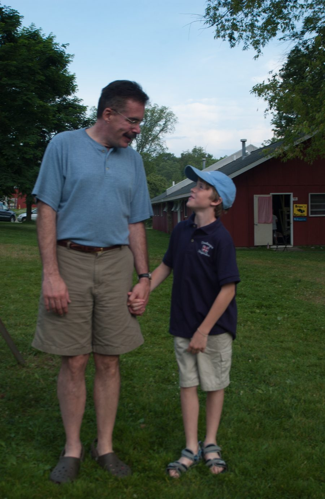

Mission Meadows · Lake Chautauqua, New York
Western New York · Chautauqua
There are photographs that record events, and photographs that record feelings. This one records a feeling — the specific quality of a summer evening when a father and young son are walking somewhere together and the boy looks up, and the father looks down, and for just a moment they are the only two people in the world.
The setting is Mission Meadows, a camp on the shore of Lake Chautauqua in the far southwest corner of New York State. Behind them, a red cabin sits in the long grass under leafy trees. The light is that particular late-afternoon gold that only comes in summer in the American Northeast, when the day has finally exhaled and everything goes still.
The boy is Michael Patrick O'Brien. The look between them says everything that needed to be said.
Context & Chronicle
Long before European settlement, the shores of Lake Chautauqua were home to the Seneca people, the westernmost of the six nations of the Haudenosaunee Confederacy. The Seneca called the lake Ja-dah-gweh — variously translated as "where the fish was taken out" or "bag tied in the middle" — a reference to its distinctive elongated shape. Their trails through this landscape became the roads that settlers would follow.
In the summer of 1874, Methodist minister John Heyl Vincent and businessman Lewis Miller established the Chautauqua Sunday School Assembly on the lake's western shore. What began as a two-week teacher-training institute for Sunday school instructors grew into something far larger — a national movement of adult education, moral improvement, and public lecture that President Theodore Roosevelt would later call "the most American thing in America."
Lake Chautauqua is seventeen miles long and two miles wide at its broadest point, draining northwest into Chautauqua Creek and ultimately into Lake Erie. At 1,308 feet above sea level, it is one of the highest navigable lakes east of the Mississippi. Its cold, clear water supports exceptional fishing — muskellunge, walleye, bass, and perch — and its shores have drawn vacationers from across the region since the railroad arrived in the 1870s.
The camps and cottages that ring Lake Chautauqua have a character all their own — a particular vernacular of red-painted wooden buildings, screen doors, dock boards worn smooth by bare feet, and lawns that slope gently to the water. Many families have returned to the same camps for generations, accumulating summers the way other people accumulate possessions. The rhythm of these places is slow by design: canoes and kayaks, evening campfires, the cry of loons after dark.
Mission Meadows is a Christian camp and retreat center on the eastern shore of Lake Chautauqua, operating within a tradition of faith-formation camps that have been a feature of American Protestant life since the nineteenth century. Its meadows and cabins, its communal meals and evening programs, its particular blend of outdoor life and spiritual reflection — these give it a character that is both distinctly of its place and part of a much wider story about how Americans have long used the natural world as a setting for the formation of character.
The southwest corner of New York State has a microclimate shaped by Lake Erie to the northwest — warmer winters than the rest of upstate, and summers that arrive with a particular intensity, as if making up for lost time. July evenings in Chautauqua County have a quality of light and warmth that those who grew up with them carry always: long shadows across green grass, the smell of water and grass and old wood, the sense that summer here is not merely a season but a destination in itself.
"The places we return to year after year are not just places — they are the rooms inside which certain chapters of our lives are written."
There is something about camp settings that strips away the noise of ordinary life and leaves only what matters. No commute, no inbox, no to-do list of any consequence. Just the grass, the water, the trees, the people you are with, and whatever is happening between you right now. For children, this simplicity is the natural state of things. For adults, it is a homecoming.
The red cabins of Mission Meadows stand in a long American tradition of wooden buildings painted barn-red — a tradition that goes back to the earliest European settlement of the Northeast, when red ochre mixed with linseed oil was the cheapest and most durable finish available for outbuildings. The colour has outlasted its original practical justification and become something else: a signal of unpretentiousness, of function over ornament, of the American countryside in its most familiar key.
A father and son walking together, hand in hand, across a summer lawn — this is an image as old as fatherhood itself. What changes is the particular lawn, the particular light, the particular boy. The look between them — the boy looking up with an expression that contains both a question and a kind of wondering admiration, the father looking down with something that can only be called tenderness — is timeless in the way that only the most ordinary moments can be.
The photograph will be there long after the moment is gone, carrying the warmth of that evening forward into whatever comes next.
The Same Boy, Decades Later
Michael Patrick & Yaamy Today →